Multiple Regression Module
Dave Jacobson, Ph.D. and Halbana Tarmizi, Ph.D.
Competency area: Data Analysis
Learning objectives: After this module, students will be able to:
Hypothesize the general form of the multiple regression model.
Specify the model assumptions for a multiple regression model.
Use the method of least squares to estimate the coefficients in the multiple regression model.
Interpret the regression coefficients.
Assess the overall utility of the multiple regression model using the global F-Test.
Assess the utility of the multiple regression model by making inferences about the regression coefficients.
Use the least squares model to estimate the mean value of the response variable for specific values of the predictor variables.
Use the least squares model to predict a particular value of the response variable for given values of the predictor variables.
Calculate the multiple coefficients of determination and understand their relationship to multiple regression.
Hypothesize the form of an interaction model and interpret the estimated regression coefficients.
Hypothesize the form of a multiple regression model with one or more categorical predictor variables and interpret the estimated regression coefficients.
Select the most important independent variables for modeling the response variable using several screening methods.
Detect when multicollinearity exists in the multiple regression model and apply solutions to reduce the impact.
Understand the issues with using the regression model for values of the independent variables that are outside of the region in which the model was developed.
Requirements
The examples, activities, and assessment exercises in this module assume basic knowledge and experience with the R programming language. If you are not familiar with R, a good resource is the R module which is also available on D2L. The code for the examples in this document were produced using Version 1.1.419 of RStudio. To use the non-base packages, such as car and MASS, you must install them prior to referencing them with a command such as the library( ) function.
Prior to undertaking this module, a basic understanding of elementary statistics and simple linear regression is assumed. From introductory statistics, one should be familiar with concepts such as probability and sampling distributions, confidence interval estimation, and hypothesis testing. A Simple Linear Regression module is available on D2L. Another excellent source for refreshing your memory on both basic statistical topics and simple linear regression is provided in the next section.
Supplementary Materials
Besides the information provided in this document, a number of other materials are posted on D2L for your use in learning multiple regression. They include:
Code for reproducing all of the examples
Code for the 14 activities
Code for the Final Assessment questions
A pdf file of the third edition of OpenIntro Statistics by David M. Diez, Christopher D. Barr, and Mine Cetinkaya-Rundel. In particular, Chapter 8 (pages 372-404) is devoted to “Multiple and Logistic Regression.” Pages 372-385 provide additional examples and exercises on many of the topics that are covered in the module. The first six chapters also can be used as a review of material typically covered in an introductory statistics course. In addition, Chapter 7 (pages 331-371) is an “Introduction to Linear Regression.”
Two YouTube videos:
Using R for Multiple Regression
Using MS Excel for Multiple Regression
Resources:
Following is a list of online materials which are referenced in the content of this document. Many of them provide additional explanations and examples beyond what is covered in the following sections.
Statistics open resources: https://guides.ou.edu/OER/statistics
StatisticsSolutions: http://www.statisticssolutions.com/assumptions-of-multiple-linear-regression/
Real statistics using Excel: http://www.real-statistics.com/multiple-regression/least-squares-method-multiple-regression/
Regression coefficients: https://www.theanalysisfactor.com/interpreting-regression-coefficients/
The Analysis Factor - Assessing the fit of regression model: https://www.theanalysisfactor.com/assessing-the-fit-of-regression-models/
Description of the statex.x77 dataset in base R: https://stat.ethz.ch/R-manual/R-devel/library/datasets/html/state.html
Description of the scatterplotMatrix function in the R car package: https://www.rdocumentation.org/packages/car/versions/3.0-0/topics/scatterplotMatrix
Introduction
Multiple regression extends simple two-variable regression to the case that still has one response but many predictors (denoted \(x_{1}\), \(x_{2},\ x_{3},\)...). The method is motivated by scenarios where many variables may be simultaneously connected to an output.
Multiple Regression Model and Model Assumptions
What is Multiple Linear Regression?
Multiple linear regression is the most common form of the regression analysis. As a predictive analysis, multiple linear regression is used to describe data and to explain the relationship between one dependent variable and two or more independent variables.
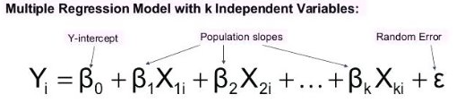
Multiple Linear Regression Assumptions (source: http://www.statisticssolutions.com/assumptions-of-multiple-linear-regression/)
First, multiple linear regression requires the relationship between the independent and dependent variables to be linear. The linearity assumption can best be tested with scatterplots.
Second, the multiple linear regression analysis requires that the errors between observed and predicted values (i.e., the residuals of the regression) should be normally distributed. This assumption may be checked by looking at a histogram or a Q-Q-Plot. Normality can also be checked with a goodness of fit test (e.g., the Kolmogorov-Smirnov test), though this test must be conducted on the residuals themselves.
Third, multiple linear regression assumes that there is no multicollinearity in the data. Multicollinearity occurs when the independent variables are too highly correlated with each other. Multicollinearity may be checked multiple ways:
1) Correlation matrix – When computing a matrix of Pearson’s bivariate correlations among all independent variables, the magnitude of the correlation coefficients should be less than .80.
2) Variance Inflation Factor (VIF) – The VIFs of the linear regression indicate the degree that the variances in the regression estimates are increased due to multicollinearity. VIF values higher than 10 indicate that multicollinearity is a problem.
If multicollinearity is found in the data, one possible solution is to center the data. To center the data, subtract the mean score from each observation for each independent variable. However, the simplest solution is to identify the variables causing multicollinearity issues (i.e., through correlations or VIF values) and removing those variables from the regression.
The last assumption of multiple linear regression is homoscedasticity. A scatterplot of residuals versus predicted values is good way to check for homoscedasticity. There should be no clear pattern in the distribution; if there is a cone-shaped pattern (as shown in figure 1), the data is heteroscedastic. If the data are heteroscedastic, a non-linear data transformation or addition of a quadratic term might fix the problem.
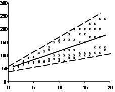
Figure 1. Scatter plot of residuals versus predicted values to check homoscedasticity
Fitting the Model: The Method of Least Squares
The best fit line is the line for which the sum of the distances between each of the n data points and the line is as small as possible. A mathematically useful approach is therefore to find the line with the property that the sum of the following squares is minimum.
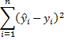
We will now extend the method of least squares to equations with multiple independent variables of form
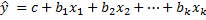
As in Method of Least Squares, we express this line in the form
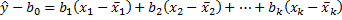
Thus,
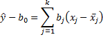
Given a set of n points (x11, …, x1k, y1), … , (xn1, …, xnk, yn), our objective is to find a line of the above form which best fits the points. As in the simple regression case, this means finding the values of the bj coefficients for which the sum of the squares, expressed as follows, is minimum:
where ŷi is the y-value on the best fit line corresponding to xi1, …, xik.
Definition: The best fit line is called the (multiple) regression line
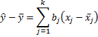
Theorem: The regression line has form
where the coefficients bm are the solutions to the following k equations in k unknowns.
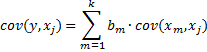
Observation: We can use either the population or sample formulas for covariance (as long as we stick to one or the other). Thus, we can use, for instance, the Excel function COVAR for the population covariance (or COVARIANCE.P in Excel 2010/2013/2016) or COVARIANCE.S for the sample covariance in Excel 2010/2013/2016 (or the supplemental function COVARS). Note too that where j = m
NOTE: The covariance is similar to the variance, except that the covariance is defined for two variables (x and y above) whereas the variance is defined for only one variable. In fact, cov(x, x) = var(x).
The covariance between two sample random variables x and y is a measure of the linear association between the two variables, and is defined by the formula
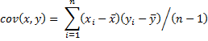
Example of using MS Excel to calculate coefficients based on covariance calculations: http://www.real-statistics.com/multiple-regression/least-squares-method-multiple-regression/
Interpretation of the Regression Coefficients
A linear regression model with multiple predictor variables can be expressed with the following common equation:
\(y\) = \(\beta\)0 + \(\beta\)1\(x\)1 + \(\beta\)2\(x\)2 +…+\(\text{\ β}\)k\(x\)k+ \(\varepsilon\)
The variables in the model are:
\(y\), the response variable;
\(x\)1, the first predictor variable;
\(x\)k, the kth predictor variable; and
\(\varepsilon\), the residual error, which is an unmeasured variable.
The parameters in the model are:
\(\beta\)0, the \(y\)-intercept;
\(\beta\)1, the first regression coefficient; and
\(\beta\)k, the kth regression coefficient.
One example would be a model of the height of a shrub (\(y\)) based on the amount of bacteria in the soil (\(x\)1) and whether the plant is located in partial or full sun (\(x\)2).
Height is measured in cm, bacteria is measured in thousand per ml of soil, and type of sun = 0 if the plant is in partial sun and type of sun = 1 if the plant is in full sun.
Let’s say it turned out that the regression equation was estimated as follows:
\(y\) = 42 + 2.3\(x\)1 + 11\(x\)2
Interpreting the Intercept
\(\beta\)0, the \(y\)-intercept, can be interpreted as the value you would predict for \(y\) if both \(x\)1 = 0 and \(x\)2 = 0.
We would expect an average height of 42 cm for shrubs in partial sun with no bacteria in the soil. However, this is only a meaningful interpretation if it is reasonable that both \(x\)1 and \(x\)2 can be 0, and if the data set actually included values for \(x\)1 and \(x\)2 that were near 0.
If neither of these conditions are true, then \(\beta\)0 really has no meaningful interpretation. It just anchors the regression line in the right place. In our case, it is easy to see that \(x\)2 sometimes is 0, but if \(x\)1, our bacteria level, never comes close to 0, then our intercept has no real interpretation.
Interpreting Coefficients of Continuous Predictor Variables
Since \(x\)1 is a continuous variable, \(\beta\)1 represents the difference in the predicted value of \(\text{y\ }\)for each one-unit difference in \(x\)1, if \(x\)2 remains constant.
This means that if \(x\)1 differed by one unit (and \(x\)2 did not differ) \(y\) will differ by \(\beta\)1 units, on average.
In our example, shrubs with a 5000 bacteria count would, on average, be 2.3 cm taller than those with a 4000/ml bacteria count, which likewise would be about 2.3 cm taller than those with 3000/ml bacteria, as long as they were in the same type of sun.
Interpreting Coefficients of Categorical Predictor Variables
Similarly, \(\beta\)2 is interpreted as the difference in the predicted value in \(y\) for each one-unit difference in \(x\)2 if \(x\)1 remains constant. However, since \(x\)2 is a categorical variable coded as 0 or 1, a one unit difference represents switching from one category to the other.
\(\beta\)2 is then the average difference in \(y\) between the category for which \(x\)2 = 0 (the reference group) and the category for which \(x\)2 = 1 (the comparison group).
So compared to shrubs that were in partial sun, we would expect shrubs in full sun to be 11 cm taller, on average, at the same level of soil bacteria.
Interpreting Coefficients when Predictor Variables are Correlated
Don’t forget that each coefficient is influenced by the other variables in a regression model. Because predictor variables are nearly always associated, two or more variables may explain some of the same variation in \(y\).
Therefore, each coefficient does not measure the total effect on \(y\) of its corresponding variable, as it would if it were the only variable in the model.
Rather, each coefficient represents the additional effect of adding that variable to the model, if the effects of all other variables in the model are already accounted for. (This is called Type 3 regression coefficients and is the usual way to calculate them. However, not all software uses Type 3 coefficients, so make sure you check your software manual so you know what you’re getting).
This means that each coefficient will change when other variables are added to or deleted from the model.
Use of R for Estimating Coefficients
Manual calculations of the estimated coefficients requires extensive use of matrix and linear algebra. R automatically builds the matrices and carries out all the necessary calculations when we instruct it to fit a multiple linear regression model. As in simple regression models, we use lm( ) and just include any additional predictors when we specify the formula in the first argument.
We’ll use the state.x77 dataset in the base R package for this example. (https://stat.ethz.ch/R-manual/R-devel/library/datasets/html/state.html) The table below (Table 1) shows the contents of the first six rows of the dataset.
Table 1. First six rows of the state.x77 dataset in base R.
Suppose we want to explore the relationship between a state’s murder rate and other characteristics of the state, including population, illiteracy rate, average income, and frost levels (mean number of days below freezing).
Because the lm( ) function requires a data frame (and the state.x77 dataset is contained in a matrix), we can simplify our life with the code in Figure 2.
Figure 2. Creation of the states data frame to be used for multiple regression.
This code creates a date frame called states, containing the variables we’re interested in. We’ll use this new data frame for the remainder of the module.
As stated earlier, a good first step in multiple regression is to examine the relationships among the variables two at a time. The bivariate correlations are provided by the cor( ) function, and scatterplots are generated from the scatterplotMatrix( ) function in the car package (see figures 3 and 4).
Figure 3. Code to generate the bivariate correlations and scatterplots for states.
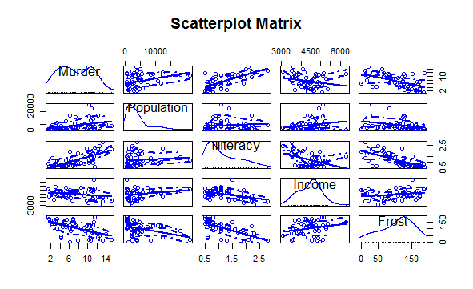
Figure 4. Scatterplot matrix of dependent and independent variables for the states data.
By default, the scatterplotMatrix( ) function provides scatterplots of the variables with each other in the off-diagonals and superimposes smoothed (loess) and linear fit lines on these plots. The principal diagonal contains density and rug plots for each variable. (https://www.rdocumentation.org/packages/car/versions/3.0-0/topics/scatterplotMatrix)
You can see in figure 4 that murder rate may be bimodal and that each of the predictor variables is skewed to some extent. Murder rates rise with population and illiteracy, and they fall with higher income levels and frost. (This can be seen by inspecting the scatterplots in the first row in figure 4 as the murder rate is the y-axis variable while population, literacy, income level, and frost are the x-axis variables, respectively.) At the same time, colder states have lower illiteracy rates and population ((scatterplot in the third row and last column with literacy rate on the vertical axis) and higher incomes (scatterplot in the third row and fourth column with literacy rate again on the vertical axis).
Activity 1
The boot package is a library of R code that’s included with the standard installation but isn’t automatically loaded. Load boot with a call to library(boot). You’ll find a data frame called nuclear, which contains data on the construction of nuclear power plants in the United States in the late 1960s.
Access the documentation by entering ?nuclear and examine the details of the variables. (Note there is a mistake for date, which provides the date that the construction permits were issued – it should read “measured in years since January 1 1900 to the nearest month.”)
Generate the bivariate correlations and scatterplots for nuclear.
Now let’s fit the multiple regression model with the lm( ) function (see figure 5).
Figure 5. Fitting the multiple regression model in R with the lm( ) function.
As was pointed out earlier, when there’s more than one predictor variable, the regression coefficients indicate the increase in the dependent variable for a unit change in a predictor variable, holding all other predictor variables constant. For example, the regression coefficient for Illiteracy is 4.14, suggesting that an increase of 1% in illiteracy is associated with a 4.14% increase in the murder rate, controlling for population, income, and temperature.
Activity 2
For the nuclear data frame in Activity 1, one of the original objectives was to predict the cost of further construction of these power plants. Create a fit and summary of a linear regression model that aims to model cost by t1 and t2, two variables that describe the different elapsed times associated with the application for and issue of various permits. Take note of the estimated regression coefficients and their significance in the fitted model.
Assessing the Overall Accuracy of the Model
Source: https://www.theanalysisfactor.com/assessing-the-fit-of-regression-models/
A well-fitting regression model results in predicted values close to the observed data values. The mean model, which uses the mean for every predicted value, generally would be used if there were no informative predictor variables. The fit of a proposed regression model should therefore be better than the fit of the mean model.
Three statistics are used in Ordinary Least Squares (OLS) regression to evaluate model fit: R2, the overall F-test, and the Root Mean Square Error (RMSE). All three are based on two sums of squares: Sum of Squares Total (SST) and Sum of Squares Error (SSE). SST measures how far the data are from the mean, and SSE measures how far the data are from the model’s predicted values. Different combinations of these two values provide different information about how the regression model compares to the mean model.
Each of the three evaluation techniques will now be covered in detail starting with R2 and the associated adjusted R2.
Multiple Coefficients of Determination: R2 and adjusted R2
The difference between SST and SSE is the improvement in prediction from the regression model, compared to the mean model. Dividing that difference by SST gives R2. It is the proportional improvement in prediction from the regression model, compared to the mean model. It indicates the goodness of fit of the model.
R2 has the useful property that its scale is intuitive: it ranges from zero to one, with zero indicating that the proposed model does not improve prediction over the mean model, and one indicating perfect prediction. Improvement in the regression model results in proportional increases in R2.
One pitfall of R2 is that it can only increase as predictors are added to the regression model. This increase is artificial when predictors are not actually improving the model’s fit. For example, a model that contains three parameters will provide a perfect fit to a sample of three data points, and R2 will equal 1. Likewise, you will always obtain a perfect fit (R2 = 1) to a set of \(n\) data points if the model contains exactly \(n\) parameters. Consequently, if you want to use the value of R2 as a measure of how useful the model will be for predicting \(y\), it should be based on a sample that contains substantially more data points than the number of parameters in the model.
As an alternative to using R2 as a measure of model adequacy, a related statistic, adjusted R2, incorporates the model’s degrees of freedom. Adjusted R2 will decrease as predictors are added if the increase in model fit does not make up for the loss of degrees of freedom. Likewise, it will increase as predictors are added if the increase in model fit is worthwhile. Adjusted R2 should always be used with models with more than one predictor variable. It is interpreted as the proportion of total variance that is explained by the model.
There are situations in which a high R2 is not necessary or relevant. When the interest is in the relationship between variables, not in prediction, R2 is less important. An example is a study on how religiosity affects health outcomes. A good result is a reliable relationship between religiosity and health. No one would expect that religion explains a high percentage of the variation in health, as health is affected by many other factors. Even if the model accounts for other variables known to affect health, such as income and age, an R2 in the range of 0.10 to 0.15 is reasonable.
R2 is often referred to as the multiple coefficient of determination, and the adjusted R2 as the adjusted multiple coefficient of determination. To illustrate, the value R2 = 0.567 for the earlier example (figure 6). This value implies that using the independent variables Population, Illiteracy, Income, and Frost explains 56.7% of the total sample variation (measured by SST) in murder rate (\(y\)). Thus, R2 is a sample statistic that tells how well the model fits the data and thereby represents a measure of the usefulness of the entire model.
Figure 6. Portion of the R output showing overall model utility.
Note that the adjusted R2 = 0.5285, a value slightly smaller than R2. This implies that the least squares model has explained about 52.85% of the total sample variation in \(y\)-values (murder rates), after adjusting for sample size and number of independent variables in the model. Analysts prefer the more conservative adjusted R2 when choosing a measure of model adequacy.
Despite their utility, R2 and adjusted R2 are only sample statistics. Therefore, it is dangerous to judge the global usefulness of a model based solely on these values. A better method is to conduct a test of hypothesis involving all the \(\beta\) parameters (except \(\beta_{0}\)) in a model.
Testing Global Usefulness of the Model: The Analysis of Variance F-Test
Hypothesis testing allows us to carry out inferences about population parameters using data from a sample. In order to test a hypothesis in statistics, we must perform the following steps:
1) Formulate a null hypothesis and an alternative hypothesis on population parameters.
2) Build a statistic to test the hypothesis made.
3) Define a decision rule to reject or not to reject the null hypothesis. Next, we will examine each one of these steps.
It is very important to remark that hypothesis testing is always about population parameters. Hypothesis testing implies making a decision, on the basis of sample data, on whether to reject that certain restrictions are satisfied by the basic assumed model. The restrictions we are going to test are known as the null hypothesis, denoted by H0. Thus, null hypothesis is a statement on population parameters.
In multiple regression, the hypotheses read like this:
H0: β1 = β2 = ... = βk = 0
HA: At least one β is not zero
The null hypothesis claims that there is no significant correlation at all. That is, all of the coefficients are zero and none of the variables belong in the model. The alternative hypothesis is not that every variable belongs in the model but that at least one of the variables belongs in the model.
The test statistic used to test this hypothesis is an \(F\)-statistic, and several equivalent versions of the formula can be used (although we will usually rely on R or other statistical software to calculate the \(F\)-statistic):
Test statistic: \(F = \ \frac{\left( SST - SSE \right)/k}{SSE/\lbrack n - \left( k + 1 \right)\rbrack}\) = \(\frac{Mean\ Square\ (Model)}{Mean\ Square\ (Error)}\) = \(\frac{R^{2}/k}{\left( 1 - \ R^{2} \right)/\lbrack n - \left( k + 1 \right)\rbrack}\)
R2: the Coefficient of Determination. The value of R2 can range between 0 and 1, and the higher its value the more accurate the regression model is.
k: the total number of variables in the model
n: the number of observations in the sample
These formulas indicate that the F-statistic is the ratio of the explained variability divided by the model degrees of freedom to the unexplained variability divided by the error degrees of freedom. Thus, the larger the proportion of the total variability accounted for by the model, the larger the F-statistic.
A rejection of the null hypothesis H0: \(\beta_{1}\) = \(\beta_{2}\) = \(\cdots\) = \(\beta_{k}\) = 0 in the global F-test leads to the conclusion [with 100(1 \(–\ \alpha\))% confidence] that the model is statistically useful. That means, there is a statistically significant linear relationship between the response and at least one of the predictors. However, statistically “useful” does not necessarily mean “best.” Another model may prove even more useful in terms of providing more reliable estimates and predictions. This global F-test is usually regarded as a test that the model must pass to merit further consideration.
After we have determined that the overall model is useful for predicting \(y\) using the F-test, we may elect to conduct one or more t-tests on the individual \(\beta\) parameters. We will cover these tests in the section on Assessing the Accuracy of the Coefficient Estimates.
The elements of the global test of the model for our ongoing example are:
H0: \(\beta_{1}\) = \(\beta_{2}\) = \(\beta_{3}\) = \(\beta_{4}\) = 0
HA: At least one of the four model coefficients, \(\beta_{1}\), \(\beta_{2}\), \(\beta_{3}\), and \(\beta_{4}\), is nonzero.
Test statistic: F = \(\frac{MS(Model)}{\text{MSE}}\) = 14.73 (see figures 5 and 6)
p-value \(\approx\) 0
Conclusion: Because \(\alpha = 0.05\) exceeds the observed significance level, (p \(\approx\) 0), the data provide strong evidence that at least one of the model coefficients is nonzero. The overall model appears to be statistically useful for predicting murder rate. There is a statistically significant linear relationship between murder rate and at least one of the predictors.
Root Mean Square Error (RMSE)
A third measure of the utility of the model is the root mean square error (RMSE). It is often also referred to as the residual standard error, s. One useful interpretation of the estimated residual standard error (equivalently deviation) s is that the interval \(\pm 2s\) will provide a rough approximation to the accuracy with which the model will predict future values of y for given values of x.
From figures 5 and 6, we expect the model to provide predictions of murder rates to within about \(\pm 2s\) = \(\pm 2\left( 2.535 \right) = 5.07\) per 100,000.
We use RMSE both to check the utility of the model and to provide a measure of reliability of predictions and estimates when the model is used for those purposes.
Assessing the Accuracy of the Coefficient Estimates
If the model is deemed adequate (that is, if you reject H0 when conducting a test of overall model adequacy using the F-test), then we can make inferences about some or all of the \(\beta\) parameters. Inferences about the individual \(\beta\) parameters in a model are obtained using either a confidence interval or a test of hypothesis.
Hypothesis Tests on the Coefficients
Using the properties of the least squares estimators discussed earlier, one can use \(t\)-tests in making inferences about the individual \(\beta\) parameters in the multiple regression model. The statistic for testing H0: \(\beta_{j}\) = 0 versus HA: \(\beta_{j}\) \(\neq\) 0 is
\[t_{j} = \ \frac{{\widehat{\beta}}_{j} - 0}{\text{s.e.}\left( {\widehat{\beta}}_{j} \right)} = \ \frac{{\widehat{\beta}}_{j}}{\text{s.e.}\left( {\widehat{\beta}}_{j} \right)}\]
which has a Student’s \(t\)-distribution with \(n - (k + 1)\) degrees of freedom. We compare the \(p\)-value of the test with \(\alpha\) and reject H0 if \(p\)-value \(\leq \ \alpha\). The \(p\)-value is computed and supplied as part of the regression output by statistical software such as R. The standard errors of the coefficients are computed by statistical packages as part of their standard regression output.
The rejection of H0: \(\beta_{j}\) = 0 means that \(\beta_{j}\) is likely to be different from 0, and hence the predictor variable \(x_{j}\) is a statistically significant predictor of the response variable \(y\) after adjusting for the other predictor variables.
In our continuing example, let’s test whether the coefficient for the Illiteracy independent variable differs significantly from 0. The hypotheses of interest concern the parameter \(\beta_{2}\). Specifically,
H0: \(\beta_{2}\) \(=\) 0
HA: \(\beta_{2}\) \(\neq\) 0
The test statistic is a \(t\)-statistic formed by dividing the sample estimate \({\widehat{\beta}}_{2}\) of the parameter \(\beta_{2}\) by the estimated standard error of \({\widehat{\beta}}_{2}\). These estimates, \({\widehat{\beta}}_{2}\) = 4.143 and \(s.e.({\widehat{\beta}}_{2}\)) = 0.8744, as well as the calculated \(t\)-value,
Test statistic: \(t = \ \frac{{\widehat{\beta}}_{2}}{\text{s.e.}\left( {\widehat{\beta}}_{2} \right)}\) = \(\frac{4.143}{0.8744}\) = 4.738
are shown in the R output in figure 7. The coefficient is significantly different from zero at the \(p\ < 0.001\) level.
Figure 7. Results for tests of the individual multiple regression coefficients.
Likewise, Population is significantly different at the \(p\ < 0.05\ \)level. On the other hand, the coefficient for Frost isn’t significantly different from zero (\(p\)-value = 0.9541) suggesting that Frost and Murder aren’t linearly related when controlling for the other predictor variables. Similarly, with a \(p\)-value = 0.9253, Income isn’t significantly different from zero. It appears that a multiple regression model with the predictor variables Illiteracy and Population is adequate for predicting the Murder rate.
One must use caution when conducting \(t\)-tests on the \(\beta\) parameters. It is dangerous to conduct \(t\)-tests on the individual \(\beta\) parameters for the purpose of determining which independent variables are useful for predicting \(y\) and which are not. If we fail to reject H0: \(\beta_{j} = 0\), several conclusions are possible:
There is no relationship between \(y\) and \(x_{j}\).
A straight-line relationship between \(y\) and \(x_{j}\) exists (holding the other \(x\)’s in the model fixed), but a Type II error occurred.
A relationship between \(y\) and \(x_{j}\) (holding the other \(x\)’s in the model fixed) exists but is more complex than a straight-line relationship (e.g., a curvilinear relationship may be appropriate). The most you can say about a \(\beta\) parameter test is that there is either sufficient (if you reject H0: \(\beta_{j} = 0\)) or insufficient (if you do not reject H0: \(\beta_{j}\) = 0) evidence of a linear(straight-line) relationship between \(y\) and \(x_{j}\).
If we were to conduct a series of \(t\)-tests to determine whether the independent variables are contributing to the predictive relationship, we would be very likely to make one or more errors in deciding which terms to retain in the model and which to exclude. For example, suppose we fit a model in 10 \(x\) variables and decide to conduct \(t\)-tests on all 10 of the individual \(\beta\)’s in the model, each at \(\alpha = 0.05.\) Even if all the \(\beta\) parameters (except \(\beta_{0}\)) are equal to 0, approximately 40% the time we will incorrectly reject the null hypothesis at least once and conclude that some \(\beta\) parameter differs from 0. Thus, in multiple regression models for which a large number of independent variables are being considered, conducting a series of \(t\)-tests may include a large number of insignificant variables and exclude some useful ones.
In summary, a recommendation for checking the utility of a multiple regression model is:
First, conduct a test of overall model adequacy using the \(F\)-test – that is, test
H0: \(\beta_{1}\) = \(\beta_{2}\) = \(\cdots\) = \(\beta_{k}\) = 0
If the model is deemed adequate (that is, if we reject H0), then proceed to step 2. Otherwise, we should hypothesize and fit another model. The new model may include more independent variables or higher-order terms.
Conduct \(t\)-tests on those \(\beta\) parameters in which you are particularly interested. It is a safe practice to limit the number of \(\beta\)’s that are tested. Conducting a series of \(t\)-tests leads to a high overall Type I error rate \(\alpha\).
Confidence Intervals
We can easily find confidence intervals for any of the regression parameters in multiple regression models with the confint( ) function in R. Using fit, the object of the fitted model for Murder rate with the Population, Illiteracy, Income, and Frost predictors, the output of a call to confint( ) is shown in figure 8.
Figure 8. 95% confidence intervals for the multiple regression coefficients.
The results suggest that we can be 95% confident that the interval (2.38, 5.90) contains the true change in murder rate for a 1% change in illiteracy rate. Additionally, because the confidence interval for Frost contains 0, we can conclude that a change in temperature is unrelated to murder rate, holding the other variables constant.
Recall that the Population and Illiteracy variables were shown to be statistically significant at the 5% level in the earlier model summary and that their 95% confidence levels do not include the null value of zero. On the other hand, the coefficients for the Income and Frost variables are nonsignificant, and their confidence intervals clearly include zero. This reflects the fact that the Income and Frost variables are not considered statistically significant in this particular model.
Activity 3
Construct 99% confidence intervals for the regression coefficients for the model that you fit in Activity 2.
Using the Model for Estimation and Prediction
The fitted multiple regression equation can be used to predict the value of the response variable using a set of specific values of the predictor variables, \(x_{0} = \ \left( x_{01},\ x_{02},\ \cdots,x_{0k}\ \right)\). Prediction (or forecasting) for multiple regression follows the same rules as for simple linear regression.
It’s important to remember that point predictions found for a particular covariate profile – the collection of predictor values for a given individual – are associated with the mean (or expected value) of the response; that confidence intervals provide measures for mean responses; and that prediction intervals provide measures provide measures for raw observations. We also have to consider the issue of interpolation (predictions based on \(x\) values that fall within the range of the originally observed covariate data) versus extrapolation (prediction from \(x\) values that fall outside the range of said data). Other than that, the R syntax for predict is identical to that used in simple linear regression.
As an example, let’s consider the data frame survey, located in the MASS package. These data record particular characteristics of 237 first-year undergraduate statistics students collected from a class at the University of Adelaide, South Australia. Load the required package first with a call to library(MASS) and then enter ?survey at the prompt. The help file provides which variables are present in the data frame.
Using the survey data frame, let’s determine the joint effect of sex and handspan on predicting height. We will include both predictors in a multiple linear model (figure 9).
Figure 9. Multiple regression model relating height to sex and handspan.
We see that handspan and sex yield very small \(p\)-values. Using the above model fitted on student height as a linear function of handspan and sex, we can estimate the mean height of a male student with a writing handspan of 16.5 cm, together with a confidence interval (figure 10).
Figure 10. 95% confidence interval for mean height of a male with a handspan of 16.5 cm.
The result indicates that we have an mean height value of about 173.49 cm and that you can be 95% confident the true value of height lies somewhere between 170.94 and 176.03 (rounded to 2 decimal places). In the same way, the mean height of a female with a handspan of 13 cm is estimated at 158.41 cm, with a 99% prediction interval of 139.76 to 177.07 (figure 11).
Activity 4
For the fitted regression model from Activity 2, construct a 98% confidence interval for the mean cost of power plants when t1 = 18 and t2 = 70.
Figure 11. 99% prediction interval for height of a female with a handspan of 13 cm.
Activity 5
For the fitted regression model from Activity 2, construct a 98% prediction interval for the cost of a power plant when t1 = 18 and t2 = 70.
There are in fact two female students in the data set with writing handspans of 13 cm, as we can see in figure 12.
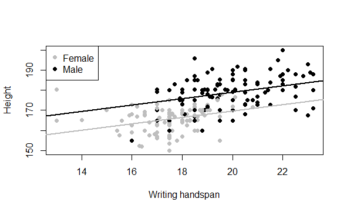
Figure 12. Fitted multiple linear model of student height modeled by handspan and sex.
The code for creating figure 12 is given in figure 13.
Figure 13. R code for creating figure 12.
By subsetting data frames, we can inspect the two records of the female students with writing handspans of 13 cm and select the three variables of interest (figure 14).
Figure 14. Records of two females with writing handspans of 13 cm.
Now, the second female’s height falls well inside the prediction interval, but the first female’s height is significantly higher than the upper limit (177.07 cm). It’s important to realize that, technically nothing has gone wrong here in terms of the model fitting and interpretation – it’s still possible that an observation can fall outside a prediction interval, even a wide 99% interval, though it’s perhaps improbable. There could be any number of reasons for this occurring. First, the model could be inadequate. For example, we might be excluding important predictors in the fitted model and therefore have less predictive power. Second, although the prediction is within the range of the observed data, it has occurred at one extreme end of the range, where it’s less reliable because our data are relatively sparse. Third, the observation itself may be tainted in some way – perhaps the individual recorded her handspan incorrectly, in which case her invalid observation should be removed prior to model fitting.
It should be noted that we fit a categorical variable, Sex, in the above example. We will discuss the fitting and interpretation of categorical variables in more detail later.
Interaction Model
So far, we’ve looked only at the joint main effects of how predictors affect the response variable. Now we’ll look at interactions between covariates (predictor variables). An interactive effect between predictors is an additional change to the response that occurs at particular combinations of the predictors. In other words, an interactive effect is present if, for a given covariate profile, the values of the predictors are such that they produce an effect that augments the stand-alone main effects associated with those predictors.
Assuming the case with two independent variables, \(x_{1}\) and \(x_{2}\), we’ve limited ourselves thus far to the situation where both variables affect \(\widehat{y}\) independently of each other. We now consider the case where the effect of \(x_{1}\) on \(\widehat{y}\) changes completely depending on the value of \(x_{2}\). Likewise, the effect of \(x_{2}\) on \(\widehat{y}\) changes depending on the value of \(x_{1}\). In our earlier modeling, only main effects of \(x_{1}\) and \(x_{2}\) are needed to determine \(\widehat{y}\). In an interaction model, main effects and an interactive effects between \(x_{1}\) and \(x_{2}\) are present.
It is important to note that when estimating regression models, we always have to accompany interactions with the main effects of the relevant predictors. This is necessary for reasons of interpretability. Since interactions are themselves best understood as an augmentation of the main effects, it makes no sense to remove the latter and leave in the former.
For a good example of an interaction, think about pharmacology. Interactive effects between medicines are relatively common, which is why health care professionals often ask about other medicines you might be taking. Consider statins – drugs commonly used to reduce cholesterol. Users of statins are told to avoid grapefruit juice because it contains natural chemical compounds that inhibit the efficacy of the enzyme responsible for the correct metabolization of the drug. If an individual is taking statins and not consuming grapefruit, we would expect a negative relationship between cholesterol use and statin use – as statin use increases or is affirmative, the cholesterol level decreases. On the other hand, for an individual on statins who is consuming grapefruit, the nature of the relationship between cholesterol level and statin use could easily be different – weakened negative, neutral, or even positive. If so, since the effect of the statins on cholesterol changes according to the value of another variable – whether or not grapefruit is consumed – this would be considered an interaction between those two predictors.
As an example, consider the automobile data in the mtcars data frame. Let’s say that we’re interested in the impact of automobile weight and horsepower on mileage (MPG). We could fit a regression model that includes both predictors, along with their interaction, as shown in figure 15.
Figure 15. Multiple linear regression with a significant interaction term.
We can see from the Pr(>|t|) column that the interaction between horsepower and car weight is significant. What does this mean? A significant interaction between two predictor variables tells us that the relationship between one predictor and the response variable depends on the level of the other predictor. Here it means the relationship between miles per gallon and horsepower varies by car weight.
The model for predicting mpg is
\(\widehat{\text{mpg}}\) \(= 49.81 - 0.12\ \times hp - 8.22\ \times wt + 0.03\ \times hp\ \times wt.\)
To interpret the interaction, we can plug in various values of wt and simplify the equation. For example, we can try the mean of wt (3.2) and one standard deviation below and above the mean (2.2 and 4.2, respectively). For wt = 2.2, the equation simplifies to
\(\widehat{\text{mpg}}\) \(= 49.81 - 0.12\ \times hp - 8.22\ \times \left( 2.2 \right) + 0.03\ \times hp\ \times \left( 2.2 \right) = 31.41 - 0.06\ \times \text{hp.}\)
For wt = 3.2, this becomes \(\widehat{\text{mpg}} = 23.37 - 0.03\ \times \text{hp.}\) Finally, for wt = 4.2, the equation becomes \(\widehat{\text{mpg}} = 15.33 - 0.003\ \times \text{hp.}\) We see that as weight increases (2.2, 3.2, 4.2), the expected change in mpg from a unit increase in hp decreases (0.06, 0.03, 0.003).
Activity 6
trees is a standard built-in dataset in R. You can access this dataset simply by typing in trees in your R console. This data set provides measurements of the girth, height and volume of timber in 31 felled black cherry trees. Note that girth is the diameter of the tree (in inches) measured at 4 ft 6 in above the ground. Height is measured in feet. The first six observations are shown below.
Fit an interaction model for predicting Volume from Girth and Height.
We can visualize interactions using the effect( ) function in the effects package. The format is
plot(effect(term, mod,, xlevels), multiline=TRUE)
where term is the quoted model term to plot, mod is the fitted model returned by lm( ), and xlevels is a list specifying the variables to be set to constant values and the values to employ. The multiline=TRUE option superimposes the lines being plotted. For our current model, this becomes the code in figure 16 assuming the effects package has been installed.
Figure 16. Use of the effects package to visualize interactions.
The resulting graph is displayed in figure 17.
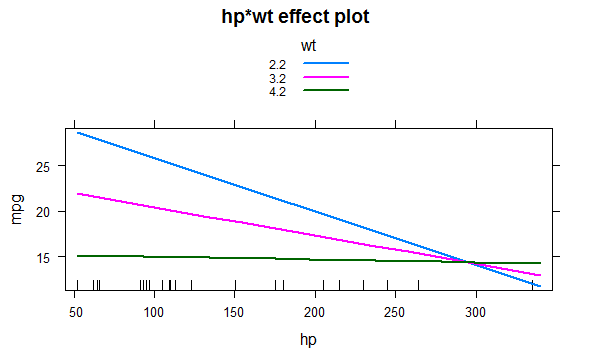
Figure 17. Interaction plot for hp*wt.
We can see form this graph that as the weight of the car increases, the relationship between horsepower and miles per gallon weakens. For wt = 4.2, the line is almost horizontal, indicating that as hp increases, mpg doesn’t change.
Activity 7
Refer to Activity 6. Construct an interaction plot for Girth*Height.
Categorical Predictors
Let’s revisit two of our earlier examples. First, in the introduction, we mentioned a two-predictor model where we discussed a relationship between the height of a shrub, response variable, and the amount of bacteria in the soil and whether there was full or partial sun exposure, the two predictor variables. Clearly the amount of bacteria in the soil is a continuous quantitative variable. However, sun exposure is a binary variable: “Full” or “Partial”. Now recall the example where we related the response variable, height, to two predictor variables, writing handspan and sex. Again writing handspan is a continuous quantitative variable measured in cm. On the other hand, sex is classified as “Male” or “Female.
Sun exposure and sex are referred to as categorical variables. As we have seen, multiple regression models can be written to include both categorical (and qualitative) and numeric (or quantitative) independent variables. Categorical variables (like sun exposure and sex) cannot be measured on a numerical scale unlike quantitative variables. Therefore, we must code the values of the categorical variables (called levels) as numbers before we can fit the model. These coded categorical variables are called dummy (or indicator) variables because the numbers assigned to the various levels are arbitrarily selected.
Let’s go back to the survey data frame where we have a Sex variable, where the students recorded their gender. Look at the documentation on the help page ?survey or enter something like figure 18.
Figure 18. Identification of the class of the Sex variable in the survey data frame.
We see that the Sex data column is a factor vector with two levels, Female and Male, and that there happens to be an equal number of the two (one of the 237 records has a missing value for this variable).
We’re going to determine whether there is statistical evidence that the height of a student is affected by Sex. This means that we’re again interested in modeling height as the response variable, but this time, it’s with the categorical sex variable as the single predictor.
To visualize the data, if we make a call to plot as in figure 19, we’ll get a pair of boxplots (figure 20).
Figure 19. Plot of a categorical predictor variable.
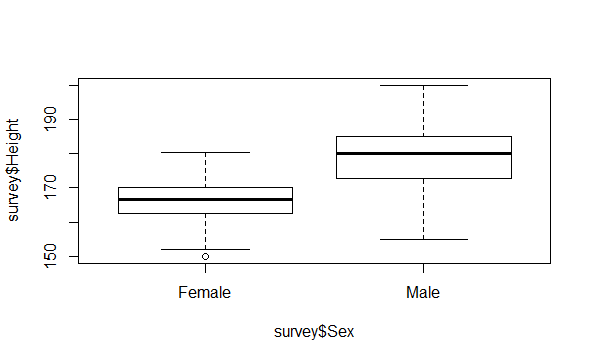
Figure 20. Boxplots of the student heights split by sex.
This is because the response variable specified to the left of the ~ is numeric and the explanatory variable to the right is a factor, and the default behavior of R in that situation is to produce side-by-side boxplots. The plot indicates, overall, that males tend to be taller than females – but is there statistical evidence to back this up? To answer this with a simple linear regression model, we can use lm( ) to produce least-squares estimates just like with every other model we’ve fitted so far (figure 21).
Figure 21. Linear regression model of binary variables.
However, because the predictor is a factor vector instead of a numeric vector, the reporting of the coefficients is slightly different. The estimate of \(\beta_{0}\) is again reported as (Intercept); this is the estimate of the mean height if a student is female. The estimate of \(\beta_{1}\) is reported as SexMale. The corresponding regression coefficient of 13.139 is the estimated difference between the mean height of male and the mean height of female. If we look at the corresponding regression equation
\[y = \ {\widehat{\beta}}_{0} + \ {\widehat{\beta}}_{1}x = 165.687 + 13.139x\]
we can see that the model has been fitted assuming the variable \(x\) is defined as “the individual is male” – 0 for no/false, 1 for yes/true. In other words, the level of “female” for the Sex variable is assumed as a reference, and it is the effect of “being male” on mean height that is explicitly estimated. The hypothesis test for \(\beta_{0}\) and \(\beta_{1}\) is performed with the typical hypotheses:
H0: \(\beta_{j} =\) 0
HA: \(\beta_{j}\ \neq 0\)
Again, it’s the test for \(\beta_{1}\) that’s generally of the most interest since it’s this value that tells us whether there is statistical evidence that the mean response variable is affected by the explanatory variable, that is, if \(\beta_{1}\) is significantly different from zero. In the above example, we see that Height is affected by the Sex of the student since \(\beta_{1}\) is highly significant.
Because there are only two possible values for \(x\), prediction is straight-forward here. When we evaluate the equation, the only decision that needs to be made is whether \({\widehat{\beta}}_{1}\) needs to be used (in other words, if an individual is male) or not (if an individual is female). For example, we can enter the code in figure 22 to create a factor of five extra observations with the same level names as the original data and store the new data in extra.obs.
Figure 22. Creation of a factor of five extra observations.
Then, use predict( ) in the familiar fashion to find the mean heights at those extra values of the predictor. When we pass in new data to predict using the newdata argument, the predictors must be in the same form as the data that were used to fit the model in the first place (figure 23).
Figure 23. 90% confidence intervals of new observations.
We can see from the output that the predictions are different only between the two sets of values – the point estimates of the two instances of Female are identical, simply \({\widehat{\beta}}_{0}\)with 90% CIs. The point estimates and CIs for the instances of Male are also all the same as each other, based on a point estimate of \({\widehat{\beta}}_{0} + \ {\widehat{\beta}}_{1}\).
Moving on from the above introductory example, let’s look in more detail at the earlier model fitted on student height as a linear function of handspan and sex. The R output for the regression analysis is shown in figure 24.
Figure 24. Summary of the regression analysis for student height related to handspan and sex.
We can see that \(\widehat{\text{height}}\) = \(137.6870 + 1.5944\ \times writing\ handspan + 9.4898\ \times sex.\)
The prediction equation for a female student can be obtained by substituting \(x_{2}\) = 0 into the above general prediction equation. Then
\[\widehat{\text{height}} = 137.6870 + 1.5944\ \times writing\ handspan + 9.4898\ \times 0 = 137.6870 + 1.5944\ \times writing\ handspan\]
Similarly, the prediction equation for a male student can be obtained by substituting \(x_{2} = 1\) into the general prediction equation. Then
\[\widehat{\text{height}} = 137.6870 + 1.5944\ \times writing\ handspan + 9.4898\ \times 1 = \left( 137.6870 + 9.4898 \right) + 1.5944\ \times writing\ handspan = 147.1768 + 1.5944\ \times writing\ handspan\]
We have two parallel lines having a slope of 1.5944. That is, for both males and females, we estimate that height increases by 1.5944 cm for each 1 cm increase in writing handspan. At each value of writing handspan, we estimate that the mean height of males is
147.1768 - 137.687 = 9.4898 cm greater than the mean height of females.
Why bother fitting a model that combines the two lines into the same equation? The answer is that we need to use this procedure if we wish to use statistical tests and confidence or prediction intervals to compare the two lines.\(898)span\ al\ prediction\ equation.\ \ Then\ \text{student\ can\ be\ obtained\ by\ substituting\ on\ of\ handspan\ and\ sex.\ \ The\ R\ output\ for\ }\)
Activity 8: In the MASS package, you’ll find the data frame cats, which provides data on sex, body weight (in kilograms), and heart weight (in grams) for 144 household cats; you can read the documentation with a call to ?cats. Load the MASS package with a call to library(MASS), and access the object directly by entering cats at the console prompt.
Fit a least-squares multiple linear regression model using heart weight as the response variable and the other two variables as predictors, and view a model summary. Use your model to estimate the mean heart rate and provide a 95% prediction interval for a female cat with a body weight of 3.4 kg.
Variable Screening Methods
When developing a regression equation, we’re implicitly faced with a selection of many possible models. Should we include all the variables under study, or drop ones that don’t make a significant contribution to prediction? Should you add interaction terms to improve the fit? The selection of a final regression model always involves a compromise between predictive accuracy (a model that fits the data as well as possible) and parsimony (a simple and replicable model). All things being equal, if we have two models with approximately equal predictive accuracy, we favor the simpler one. This section describes various methods for choosing among competing models. There’s no single criterion we can use to make the decision. The final decision requires judgment on the part of the investigator.
Comparing Models
We can compare the fit of two nested models using the anova( ) function in the base R installation. A nested model is one whose terms are completely included in the other model. In the states multiple regression model example, we found that the regression coefficients for Income and Frost were nonsignificant. We can test whether a model without these two variables predicts as well as one that includes them (figure 25).
Figure 25. Comparing nested models using the anova( ) function.
Here, model 1 is nested within model 2. The anova( ) function provides a simultaneous test that Income and Frost add to linear prediction above and beyond Population and Illiteracy. Because the test is nonsignificant (\(p = 0.9939\)), we conclude that they don’t add to the linear prediction and we’re justified in dropping them from our model.
Activity 9
Returning to the nuclear data frame, refit the model. Expand the model that you fit in Activity 2 by including a third predictor variable for the date the construction permit was issued. Compare the two models using the anova( ) function.
The Akaike Information Criterion (AIC) provides another method for comparing models. The index takes into account a model’s statistical fit and the number of parameters needed to achieve this fit. Models with smaller AIC values – indicating adequate fit with fewer parameters – are preferred. The criterion is provided by the AIC( ) function (figure 26).
Figure 26. Comparing models with the AIC.
The AIC values suggest that the model without Income and Frost is the better model. Note that although the previous approach requires nested models, the AIC approach doesn’t.
Activity 10
Compare the two models from Activity 9 with the AIC( ) function.
Variable Selection
Comparing two models is relatively straightforward, but what do we do when there are 4, or 10, or 100 possible models to consider? Two popular approaches to selecting a final set of predictor variables from a larger pool of candidate variables are stepwise methods and all-subsets regression.
In stepwise selection, variables are added to or deleted from a model one at a time, until some stopping criterion is reached. For example, in forward stepwise regression, we add predictor variables to the model one at a time, stopping when the addition of variables would no longer improve the model. In backward stepwise regression, we start with a model that includes all predictor variables, and then we delete them one at a time until removing variables would degrade the quality of the model. In stepwise regression, we combine the forward and backward stepwise approaches. Variables are entered one at a time, but at each step, the variables in the model are reevaluated, and those that don’t contribute to the model are deleted. A predictor variable may be added to, and deleted from, a model several times before a final solution is reached.
The implementation of stepwise regression methods varies by the criteria used to enter or remove variables. The Akaike Information Criterion (AIC) is an estimator of the relative quality of a model for a given data. The AIC score offers information whether the model with certain variables is a better fit compared to other models with other variables. A lower AIC value indicates a better model. The stepAIC( ) function in the MASS package performs stepwise model selection (forward, backward, or stepwise) using an exact AIC criterion. Figure 27 applies backward stepwise regression to the multiple regression problem.
Figure 27. Backward stepwise selection.
We start with all four predictors in the model. For each step, the AIC column provides the model AIC resulting from the deletion of the variable listed in that row. The AIC value for <none> is the model AIC if no variables are removed. In the first step, Frost is removed, decreasing the AIC from 97.75 to 95.75. In the second step, Income is removed, decreasing the AIC to 93.76. The Mallows Cp statistic is also used as a stopping rule in stepwise regression. It has been widely suggested that a good model is one in which the Cp statistic is close to the number of model parameters (including the intercept).
Stepwise regression is controversial. Although it may find a good model, there’s no guarantee that it will find the “best” model. This is because not every possible model is evaluated. An approach that attempts to overcome this limitation is all subsets regression.
Activity 11
Refer to the nuclear data frame. Using the fullest model with 10 predictor variables, use the stepAIC( ) function to find a suitable model for the data. Perform forward, backward, and stepwise selection. Do the resulting variables match for the three approaches?
In all subsets regression, every possible model is inspected. The analyst can choose to have all possible results displayed or ask for the nbest models of each subset size (one predictor, two predictors, and so on). For example, if nbest=2, the two best one-predictor models are displayed, followed by the two best two-predictor models, followed by the two best three-predictor models, up to a model with all predictors.
All subsets regression is performed using the regsubsets( ) function from the leaps package. We can choose the R2, Adjusted R2, or Mallows Cp statistic as our criterion for reporting “best” models.
As we’ve seen, R2 is the amount of variance accounted for in the response variable by the predictor variables. Adjusted R2 is similar but takes into account the number of parameters in the model. R2 always increases with the addition of predictors. When the number of predictors is large compared to the sample size, this can lead to significant overfitting. The Adjusted R2 is an attempt to provide a more honest estimate of the population R2 – one that’s less likely to take advantage of chance variation in the data.
In figure 28, we apply all subsets regression to the states data.
Figure 28. All subsets regression.
The results can be plotted with either the plot( ) function in the leaps package or the subsets( ) function in the car( ) package. An example of the former is provided in figure 29, and an example of the latter is given in figure 30.
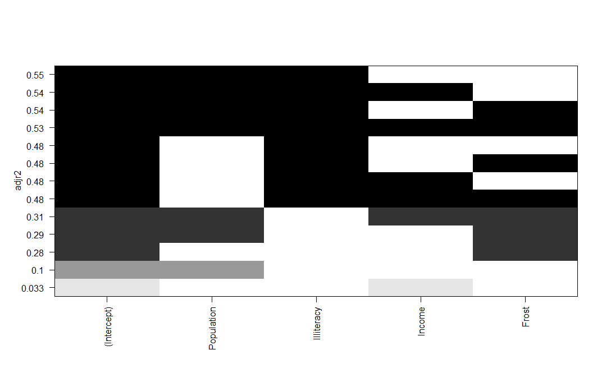
Figure 29. Best four models for each subset size based on Adjusted R2.
Figure 29 can be confusing to read. Looking at the first row (starting at the bottom), we can see that a model with the intercept and Income has an Adjusted R2 of 0.033. A model with the intercept and Population has an Adjusted R2 of 0.1. Jumping to the 12th row, a model with the intercept, Population, Illiteracy, and Income has an Adjusted R2 of 0.54, whereas one with the intercept, Population, and Illiteracy alone has an Adjusted R2 of 0.55. Here we see that a model with fewer predictors has a larger Adjusted R2 (something that can’t happen with an unadjusted R2). The graph suggests that the two-predictor model (Population and Illiteracy) is the best.
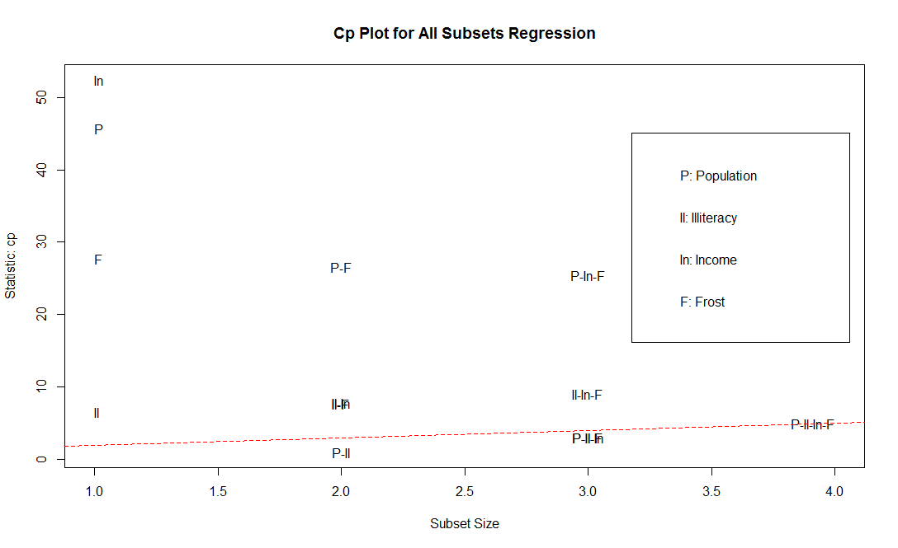
Figure 30. Best four models for each subset size based on the Mallows Cp statistic.
Figure 30 shows the best four models for each subset size based on the Mallows Cp statistic. Better models will fall close to a line with intercept 1 and slope 1. The plot suggests that we consider a two-predictor model with Population and Illiteracy; a three-predictor model with Population, Illiteracy, and Frost, or Population, Illiteracy, and Income (they overlap on the graph and are hard to read); or a four-predictor model with Population, Illiteracy, Income, and Frost. We can reject the other possible models.
In most instances, all subsets regression is preferable to stepwise regression, because more models are considered. But when the number of predictors is large, the procedure can require significant computing time. In general, automated variable selection methods should be seen as an aid rather than a directing force in model selection. A well-fitting model that doesn’t make sense doesn’t help us. Ultimately, it’s our knowledge of the subject matter that should guide us.
Activity 12
Apply all subsets regression to the nuclear data frame. Find the best five models for each subset size based on Adjusted R2. Also find the best five models for each subset size based on Mallows Cp statistic.
Multicollinearity
Multicollinearity was discussed briefly in the introductory section on multiple regression assumptions. We now delve into this issue which has substantial potential to adversely affect the validity of any conclusions we draw from a fitted model and occurs frequently enough to warrant detailed coverage. Recall multicollinearity (also simply referred to as collinearity) is when two or more of the explanatory variables are highly correlated with each other.
Imagine we’re conducting a study of grip strength. Our independent variables include date of birth (DOB) and age. We regress grip strength on DOB and age and find a significant overall \(F\)-test at \(p\ < 0.001.\ \ \) But when we look at the individual regression coefficients for DOB and age, we find that they’re both nonsignificant (that is, there’s no evidence that either is related to grip strength). What happened?
The problem is that DOB and age are perfectly correlated within rounding error. A regression coefficient measures the impact of one predictor variable on the response variable, holding all other predictor variables constant. This amounts to looking at the relationship of grip strength and age, holding age constant. The problem is called multicollinearity. It leads to large confidence intervals for model parameters and makes the interpretation of individual coefficients difficult.
In general, high correlation between two predictors implies there will some level of redundancy in terms of the information they contain when it comes to the response variable. It’s a problem since it can destabilize the ability to reliably fit a model and, as noted above, therefore be detrimental to any subsequent model-based inference.
The following items serve as potential warnings of multicollinearity when we’re inspecting a model summary:
The global F-test (detailed earlier in assessing the overall utility of the model) result is statistically significant, but none of the individual \(t\)-test results for the regression parameters are significant.
The sign of a given coefficient estimate contradicts what we would reasonably expect to see, for example, drinking more wine resulting in a lower blood alcohol level.
Parameter estimates are associated with unusually high standard errors or vary wildly when the model is fitted to different random record subsets of the data.
As the last point notes, multicollinearity tends to have more of a detrimental effect on the standard errors of the coefficients (and associated outcomes such as confidence intervals, significance tests, and prediction intervals) than it does on point predictions per se. In most cases, we can avoid multicollinearity simply by being careful. Be aware of the variables present and how the data have been collected. For example, we should ensure any given predictors we intend to include in the model don’t just represent a rescaled value of another included predictor. It’s also advisable to perform an explanatory analysis of our data, producing summary statistics and basic statistical plots. We can look at estimated correlation coefficients between variables, for example. As noted in the introduction, as a rough guide, some statisticians suggest that a correlation of 0.8 or more could lead to potential problems.
Also as indicated in the introductory section, multicollinearity can be detected using a statistic called the variance inflation factor (VIF). VIF values are provided by the vif( ) function in the car package. As stated previously, VIF > 10 indicates a multicollinearity problem. The code for our earlier states data frame example is provided in figure 31.
Figure 31. Evaluating multicollinearity with the vif( ) function in the car package.
The results indicate that multicollinearity isn’t a problem with these predictor variables. We can obtain the entire matrix of correlations between all variables in the states data frame by using the code in figure 32.
Figure 32. Correlation matrix for the states data frame.
Since the absolute value of all the pairwise correlations between predictor variables is less than 0.8, again there is no indication of multicollinearity issues.
Activity 13
Evaluate multicollinearity for the nuclear data frame with the vif( ) function in the car package.
Activity 14
Construct the correlation matrix for the nuclear data frame.
If we detect that multicollinearity exists, there are several alternative measures available for solving the problem. The appropriate measure to take depends on the severity of the multicollinearity and the ultimate goal of the regression analysis.
As indicated earlier, some researchers, when confronted with highly correlated independent variables, choose to include only one of the correlated variables in the final model. If we are interested in using the model only for estimation and prediction, we may decide not to drop any of the independent variables from the model. In the presence of multicollinearity, we have seen that it is dangerous to interpret the individual \(\beta\) parameters. However, confidence intervals for the mean and prediction intervals for individual \(y\) values generally remain unaffected as long as the values of the \(x\)’s used to predict y follow the same pattern of multicollinearity exhibited in the sample data – that is, we must take strict care to ensure that the values of the \(x\) variables fall within the range of the sample data.
Extrapolation
It is important to note that the regression model is valid only over the experimental region, which is the range of values of the independent variables in the data used to estimate the model. Prediction of the value of the dependent variable outside the experimental region is called extrapolation and is risky. Because we have no empirical evidence that the relationship we have found holds true for values of \(x\) outside of the range of values of \(x\) in the data used to estimate the relationship, extrapolation is risky and should be avoided if possible.
As an example, many research economists have developed highly technical models to relate the state of the economy to various economic indices and other independent variables. Many of these models are multiple regression models, where, for example, the dependent variable \(y\) might be next year’s gross domestic product (GDP) and the independent variables might include this year’s rate of inflation, this year’s consumer price index (CPI), and so on. In other words, the model might be constructed to predict next year’s economy using this year’s knowledge.
Unfortunately, these models were almost all unsuccessful in predicting the recession in the early 1970s, the late 1990s, and earlier in this century. What went wrong? One of the problems was that many of the regression models were used to extrapolate (i.e., predict \(y\) values of the independent variables that were outside the region in which the model was developed). For example, the inflation rate in the late 1960s, when the models were developed, ranged from 6% to 8%. When the double-digit inflation of the early 1970s became a reality, some researchers attempted to use the same models to predict future growth in GDP. The model may be very accurate for predicting \(y\) when \(x\) is in the range of experimentation, but using the model outside that range is a dangerous practice.
Final Assessment
Another of R’s built-in, ready-to-use data sets is mtcars, containing a number of descriptive details on performance aspects of 32 automobiles. Access this data frame by entering mtcars at the prompt. Then inspect its help file by entering ?mtcars to get an idea of the types of data present. Generate the bivariate correlations and scatterplot matrix for mtcars.
For the mtcars data frame, create a fit and summary of a linear regression model that considers MPG as a function of horsepower and weight.
Construct 95% confidence intervals for the regression coefficients for the model that you fit in #2.
For the fitted regression model from #2, construct a 99% confidence interval for the mean MPG when gross horsepower is 175 and weight is 3.5 (1000 lbs).
For the fitted regression model from #2, construct a 99% prediction interval for the MPG of a car when gross horsepower is 175 and weight is 3.5 (1000 lbs).
In the MASS package, you’ll find the data frame cats, which provides data on sex, body weight (in kilograms), and heart weight (in grams) for 144 household cats; you can read the documentation with a call to ?cats. Load the MASS package with a call to library(MASS), and access the object directly by entering cats at the console prompt. Fit an interaction model using heart weight as the response variable and the other two variables as predictors, and view a model summary.
Refer to #6. Construct an interaction plot for Sex*Bwt.
Use your model in #6 to estimate the mean heart rate and provide a 99% prediction interval for a male cat with a body weight of 3.8 kg.
For the cats data frame, compare the interaction model with the main-effect-only (i.e., no interaction model) using the anova( ) function.
Compare the two models from #9 with the AIC( ) function.
Refer to the mtcars data frame. Using the fullest model for estimating MPG with 10 predictor variables, use the stepAIC( ) function in the MASS package to find a suitable model for the data. Perform forward, backward, and stepwise selection.
Apply all subsets regression to the mtcars data frame. Find the best three models for each subset size based on Adjusted R2. Also find the best three models for each subset size based on Mallows Cp statistic.
Evaluate multicollinearity for the mtcars data frame with the vif( ) function in the car package.
Construct the correlation matrix for the mtcars data frame.
References
Kleinbaum, D.G., Kupper, L.L, Nizam, A., Rosenberg, E.S. Applied Regression Analysis and Other Multivariable Methods, Fifth Edition, Cengage Learning.
Montgomery, D.C., Peck, E.A., Vining, G.G. Introduction to Linear Regression Analysis, Fifth Edition, Wiley.
Weisberg, S. Applied Linear Regression, Fourth Edition, Wiley.